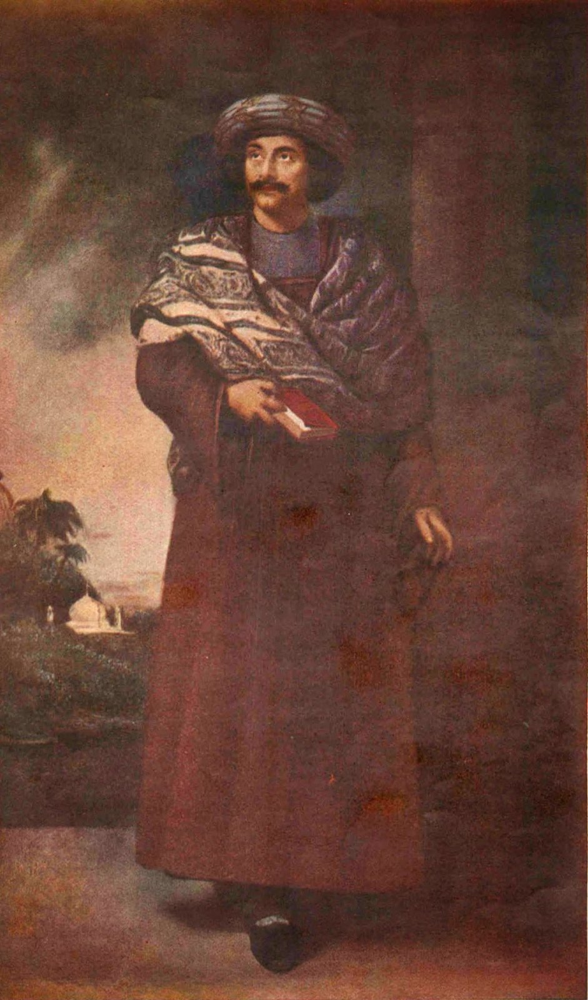
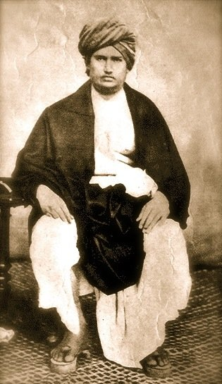
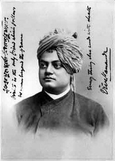

Image Title
Zoom with wheel • Drag to pan • Click reset
100%
Modern Indian History • Module 16: Indian Renaissance & Reforms
In the 19th century, the encounter with Western rationalism and humanitarian ideas triggered a monumental intellectual renaissance across India. Reformers rose against decadent social practices—Sati, child marriage, untouchability, female infanticide, and priestly monopoly—seeking to purify indigenous religious traditions and build an enlightened, egalitarian nation.

Founder of Brahmo Samaj and crusader against Sati, idol worship, and orthodoxy.
Brahmo Samaj, Young Bengal & Prarthana Samaj
Pioneered by English-educated intellectuals in Calcutta and Bombay, these movements advocated monotheism, rational scrutiny of scriptures, and legal protection for women.
Swami Dayanand Saraswati & The Arya Samaj (1875)
Rejecting Westernization, Dayanand sought to revive authentic Vedic Hinduism, proclaiming "Go back to the Vedas" and asserting the equality of all human beings under divine law.

Author of 'Satyarth Prakash', founder of Arya Samaj, and pioneer of the Shuddhi movement.
Shuddhi Movement: Reconversion ritual to bring former Hindus back into the Vedic faith, aggressively opposing Christian and Islamic proselytization.
The 1893 Split: The College faction led by Lala Hansraj founded the English-medium DAV College at Lahore (1886); the orthodox vegetarian faction led by Swami Shraddhanand established the ancient-style Gurukul Kangri at Haridwar (1902).
Swami Vivekananda & Ramakrishna Mission (1897)
Bridging ancient spiritual wisdom and modern social activism, Vivekananda took Vedanta to the world and dedicated the Ramakrishna Mission to humanitarian service.

Spiritual father of modern Indian nationalism and founder of the Ramakrishna Mission.
Priest at the Dakshineswar Kali temple who attained spiritual realizations through Hinduism, Islam, and Christianity. Proclaimed "Joto mot, toto poth" (As many faiths, so many paths), demonstrating the ultimate unity and harmony of all world religions.
Anti-Caste, Dalit & Minority Reform Movements
Grassroots leaders challenged the caste system, untouchability, and Brahmanical hegemony across Western, Southern, and Northern India.
Satyashodhak Samaj
Formed the Truth-Seekers' Society to liberate Shudras and Ati-Shudras. Authored Gulamgiri (Slavery, 1873). Opened India's first school for girls and untouchables in Pune in 1848 with his wife Savitribai Phule.
Bahishkrit Hitkarini Sabha
Launched the Mahad Satyagraha (1927) for water access and publicly burnt the *Manusmriti*. Founded the Independent Labour Party (1936) and All India Scheduled Castes Federation (1942). Published journals Mooknayak and Bahishkrit Bharat.
Aravippuram Movement
Installed a stone Shiva lingam at Aravippuram (1888), challenging Brahmin ritual monopoly. Coined the immortal slogan: "One Caste, One Religion, One God for Man". Led Ezhavas and backward classes to education and dignity.
Self-Respect Movement
Spearheaded the Vaikom Satyagraha (1924) for temple entry. Launched the Self-Respect Movement advocating priestless non-Brahmin marriages, gender equality, and rationalism; published Kudi Arasu.
| Movement / Organization | Year & Place | Founders / Leaders | Core Objective & Impact |
|---|---|---|---|
| Aligarh Movement | 1875 • Aligarh (UP) | Sir Syed Ahmad Khan | Founded MAO College (later AMU); published *Tahzib-ul-Akhlaq*; promoted modern scientific education. |
| Deoband Movement | 1866 • Saharanpur (UP) | Qasim Nanautawi & Rashid Gangohi | Orthodox revivalist school; backed the Indian National Congress and issued fatwas against British rule. |
| Singh Sabha & Akali Movement | 1873 / 1920 • Amritsar | Thakur Singh Sandhawalia, Kartar Singh | Liberated Sikh Gurdwaras from corrupt Mahants; enacted Sikh Gurdwaras Act 1925 creating SGPC. |
| Rahnumai Mazdayasnan Sabha | 1851 • Bombay | Naoroji Furdonji, Dadabhai Naoroji, S.S. Bengalee | Parsi religious reform, removal of purdah, female education; published the journal *Rast Goftar* (Truth-Teller). |
Interactive Recall & Examination Drill
Cement high-yield prelims facts on the Brahmo Samaj, Arya Samaj, Swami Vivekananda, and anti-caste movements.
Loading question...
Loading answer...
5 High-Probability Questions for UPSC, APSC & State PSCs